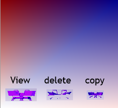

3D Иконки для сохранений
TF2 Телепорт
Это иконка с телепортом из игры Team Fortress 2. Он имеет три иконки: просмотр, удаление, копия. В icon.sys настроены цвета, их видно на фото.

СкачатьЭто иконка с телепортом из игры Team Fortress 2. Он имеет три иконки: просмотр, удаление, копия. В icon.sys настроены цвета, их видно на фото.

Скачать